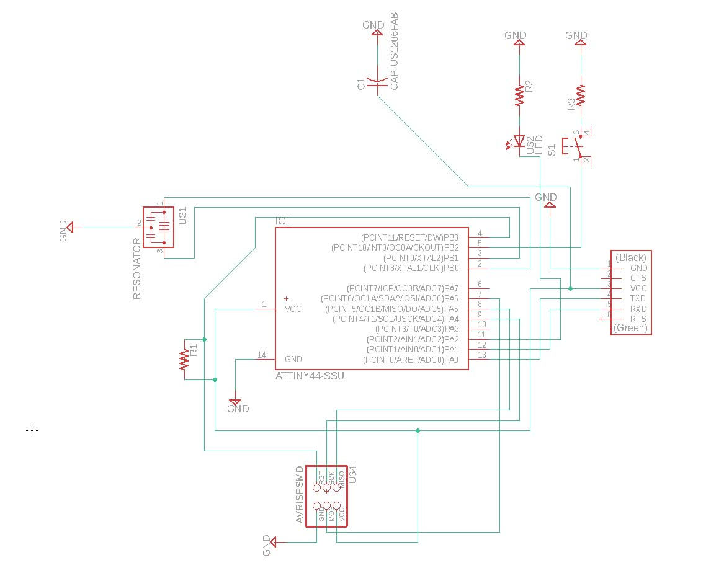
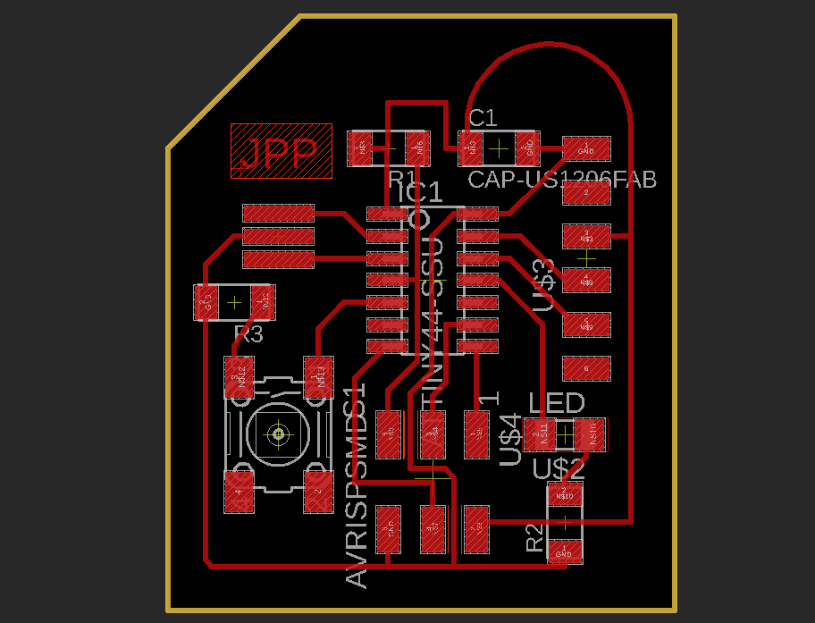
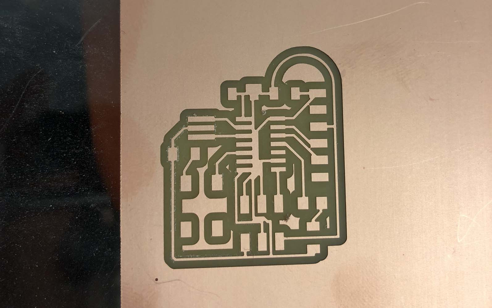
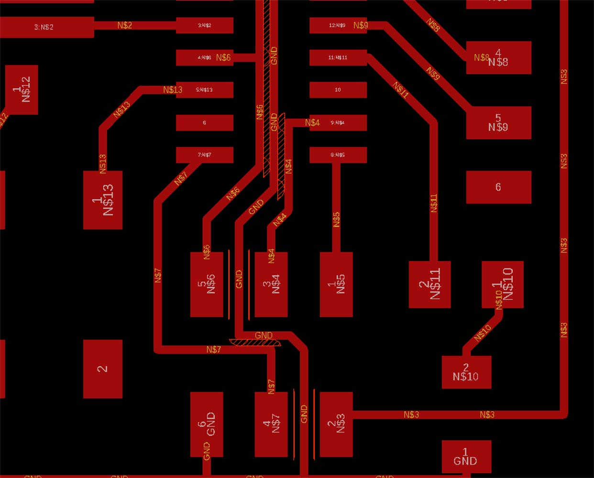
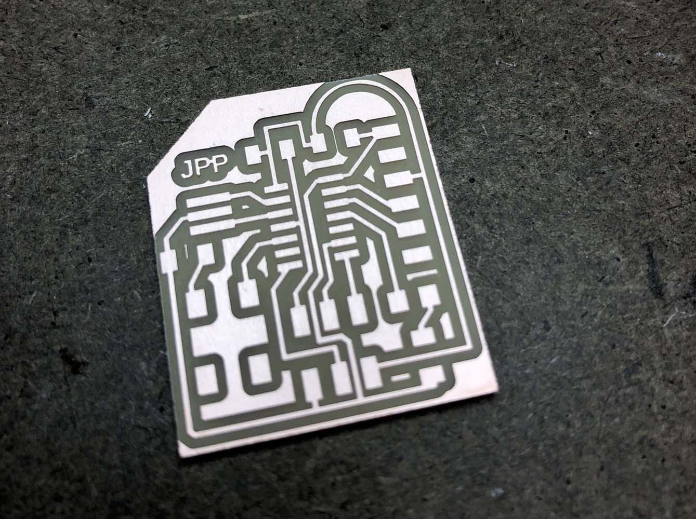
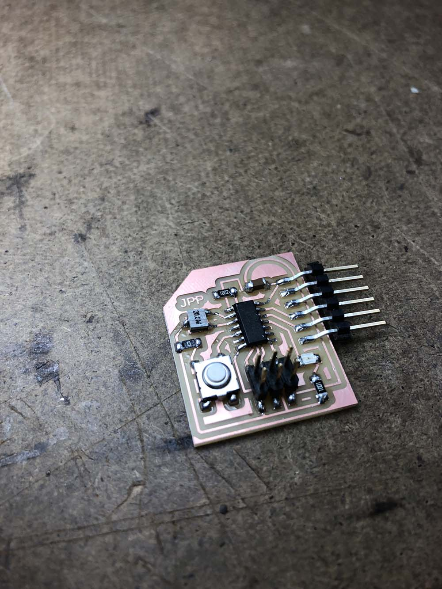

electronics design
I started by working in KiCad, but ran into issues importing libraries and exporting. Eagle seemed to have better documentation (both in terms of HTM(A)A classmate support and online discussions), so I eventually switched to using it.
First, I layed out the schematic in Eagle. I got the basics down first, and then added an LED to pin 11 (with a resistor on the ground side) and a button to pin 5. I didn’t realize it at the time, but since I didn’t include a pull-up resistor with the button, I would need to rely on the ATTiny’s internal pull-up resistor. Here’s how things looked after completing the schematic:

Next, it was time to turn the ratsnest into the board layout. It took a few iterations to get a configuration where things worked out without requiring the other side of the board or jumper wires.

The milling process itself was smooth, but after the job was complete I realized that I hadn’t set up the design rules properly in Eagle. Some of the traces were too close, and the 1⁄64” endmill didn’t get between them (see the left side of the ATTiny, and the FTDI header).

Sure enough, I had set the minimum distance between traces to 0.01mm in Eagle, but looking back to Week 3 when we characterized the endmill, it should have been set to 0.020mm. I updated the design rules, and the warnings were exactly where they were expected:

I went back to fix them, and also realized that I needed to update the grid size to .5mm rather than .25mm so that the lines could snap more easily to where I wanted them. Then, I milled again:

Things I did wrong:
Next up: soldering. This went relatively smoothy, although the resonator was one of the tricker components to solder. I was sure to get the proper orientation for the ATTiny by looking at the board in Eagle and checking where the little circle was (top left). I neglected to check the orientation on the LED, which caused some problems when I went to test the board. The (nearly invisible) green line should go on the ground side.

I tested connections with the multimeter, and didn’t find anything unexpected, so I moved onto programming.
Things I did wrong:
Next, I used the USBTiny to program the board on the lab’s computer. Because of issues with the Ubuntu virtual machine, we were running Arduino on Windows. First, I ran the blink sample file to confirm that I had identified the pin correctly in code.
The LED didn’t light up, although I could see the blinking pattern when I used the multimeter to try to diagnose, at which point I learned that my LED was backwards. It was a good excuse to try out the heat gun to remove the LED from the board, before resoldering in the correct orientation. When I plugged the board back in, it blinked.
Next, I tried programming functionality in the button….
Things I did wrong were:
{kind=link}
{kind=link}